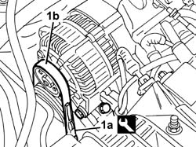

1092B70 belt from air conditioner compressor to alternator drive -adjust and tension
- Path
- Procedures > 10 ENGINE > 1092 ENGINE COMPONENT MISCELLANEOUS DRIVES > 1092B WATER PUMP AND ALTERNATOR DRIVE > 1092B70 belt from air conditioner compressor to alternator drive -adjust and tension
- Kind
- repair procedure (removal / refitting; the operation number is the code)
- Applies to
- all engines; all production periods
- Interactive page
- https://sloeber94.github.io/elrnDB-fDbl/en/#/2584326
Applies to: all engines; all production periods
1. Use tool (1a) and check that the tension of new belt (1a) is within the recommended values
 | Name | Country |
|---|---|---|
1a | Torque wrench | 1.895.762.000 |
 | Measurement | Value | |
|---|---|---|---|
- | Alternator-compressor drive belt tension (daN) | 48 - 60 | |
New belt (-) | - | ||
| Measurement | Value | |
|---|---|---|---|
- | Alternator-compressor drive belt tension (daN) | 30 - 41 | |
Used belt (-) | - | ||

Applies to: all engines; all production periods
If the value measured is not within the recommended limits, repeat the tensioning operation, loosening the alternator fastenings.
Act on the micrometric screw and correct the belt tension until it is within the permissible limits.
When the operation is completed, tighten the alternator fixing bolt to torque.
 | Fastening | Component | Ø | Value (daNm) |
|---|---|---|---|---|
- | Bolt | ALTERNATOR ASSEMBLY | M10 | 5 |
| Fastening | Component | Ø | Value (daNm) |
|---|---|---|---|---|
- | Bolt | ALTERNATOR ASSEMBLY | M12 | 8 |